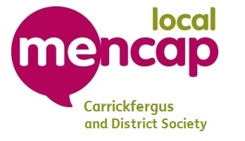

Carrickfergus & District Mencap Society
Carrickfergus and District Mencap Society meet to promote awareness within the community of learning disability. It also provides grant opportunities where there is deemed to be a need, to individuals, clubs, social groups and others working with children, young people, and adults with a learning disability. Each application will go through the grant making policy to ensure that there are equal opportunities for all. The aim of the Society is to provide support and funding so that people with a learning disability can develop both personally and socially through a range of opportunities.
To find out more information or to get in touch check out the links below:
12